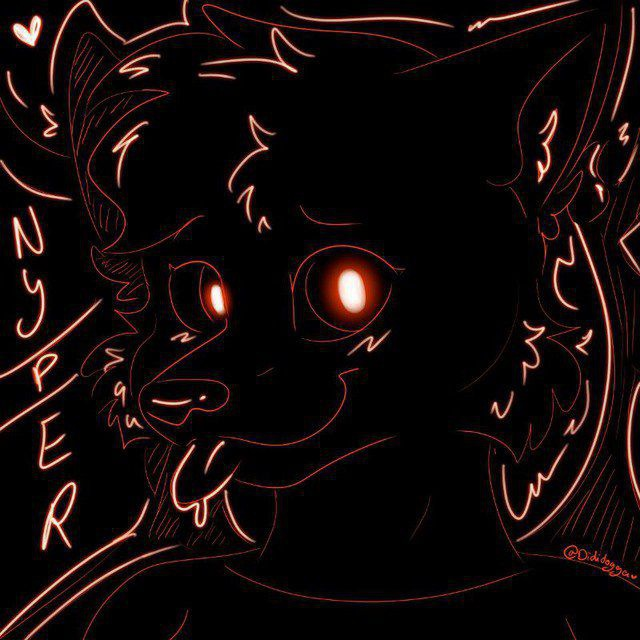

Sonic & Crash
Artista & FNF
Music Visuals
Launcher & System
Exploro la intersección entre el código y el arte. Especializada en ingeniería inversa de juegos clásicos y creación multimedia.
Si mis herramientas te han ahorrado tiempo o mi música te ha acompañado, considera apoyarme. Tu ayuda mantiene vivos estos proyectos gratuitos.
Gracias por ser parte del viaje